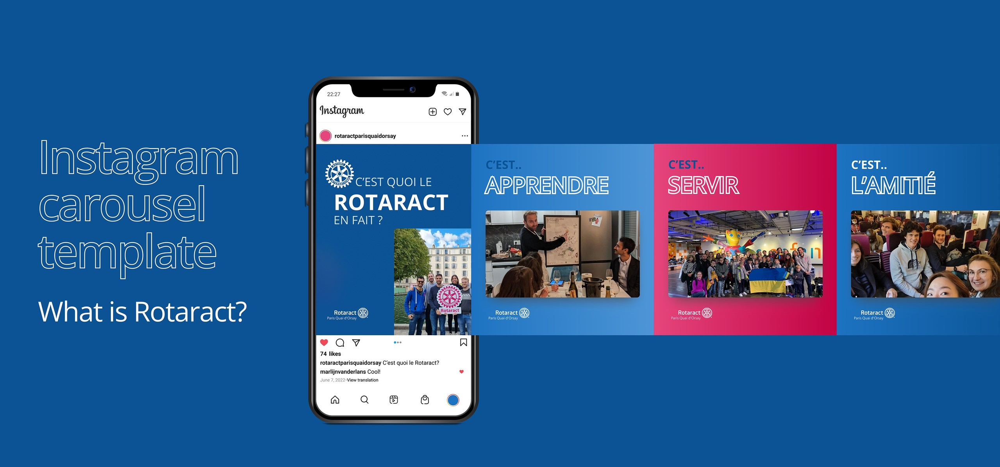
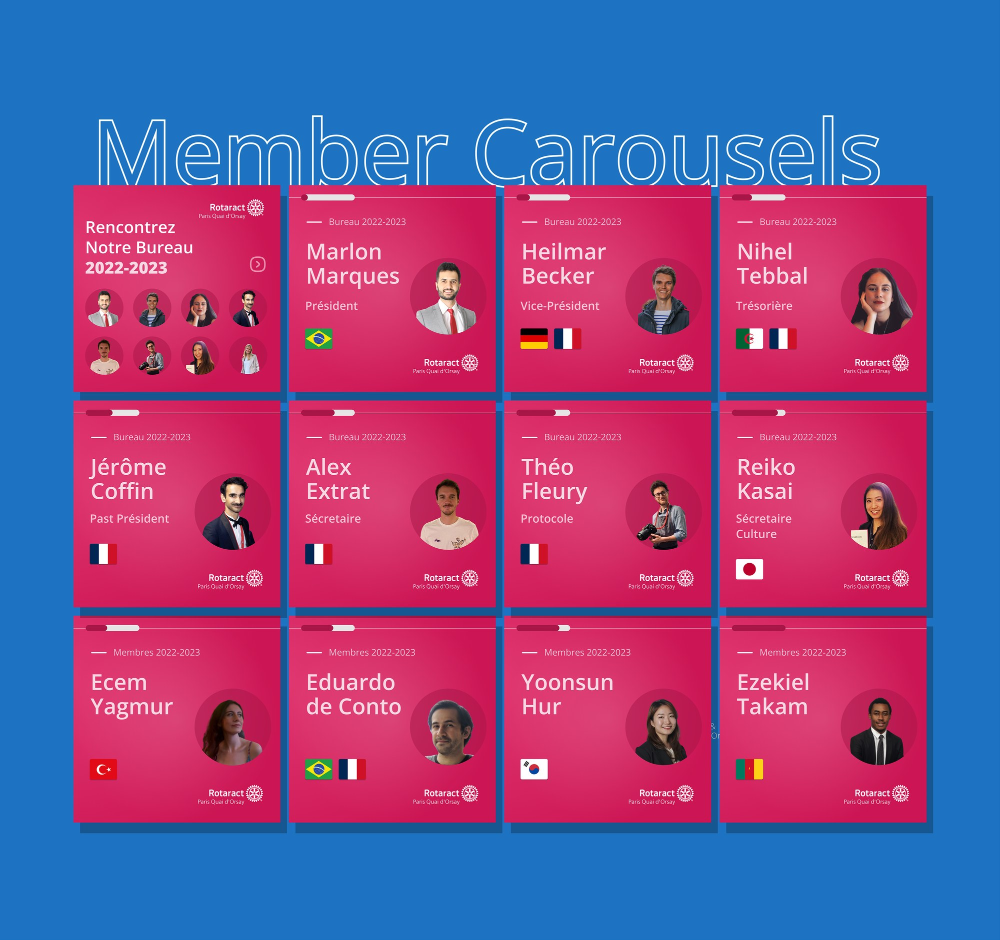
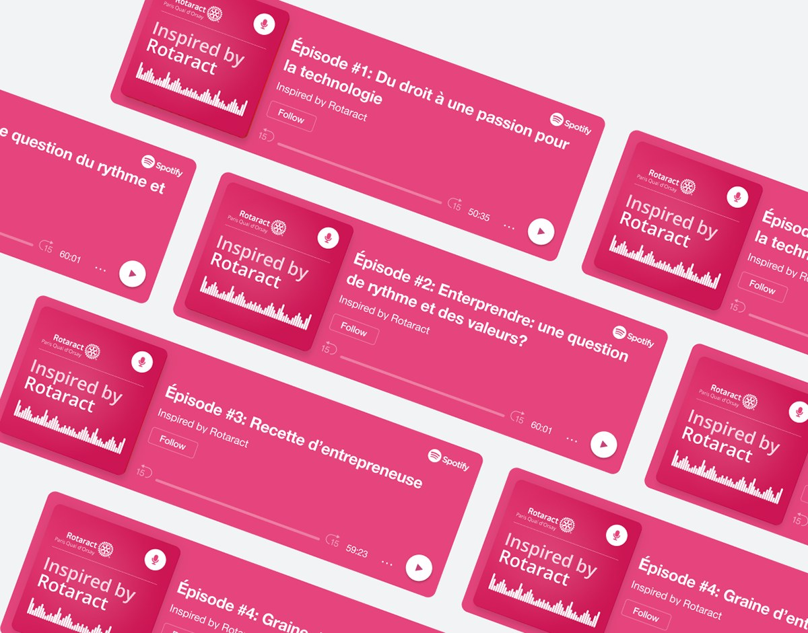

Design for good · Social media
Rotaract Paris Quai d'Orsay:
a brand kit anyone can use
Social media templates for my Rotaract club, built within the existing Rotary brand guidelines so volunteers with no design background can make posts quickly.
- Client
- Rotaract Paris Quai d'Orsay
- Year
- 2022
- Role
- Designer (volunteer)
- Tools
- Figma

The brief
This wasn't a rebrand. The Rotary brand was already defined, so the job was to create templates within its guidelines that any member could pick up and use. Our volunteers are pressed for time, and most aren't designers.
Approach
Most members made our social posts in Canva, each in their own way. I wanted simple, repeatable templates that would make post creation easy and give the club a consistent look.
Working within Rotary's guidelines, I wanted the bright blue and pink to feel fun without being overpowering. Subtle gradients, patterns and minimal icons give the colours room to speak.
01
Instagram stories
Stories
Templates for recruiting new members, meeting announcements, event recaps, cleanup days, new-post teasers and special evenings like our Movember night. Members just swap in their photos and text.

02
Carousels
Meet the team
A member carousel introduces the club's board and members, one slide each, with their role and the flags of their home countries. The club is very international. A progress bar at the top of each slide shows how far through the carousel you are.

03
Podcast
Inspired by Rotaract podcast
The kit also covers the club's podcast, with a cover and episode cards for Spotify in the same pink.

Takeaway
I loved making something practical for my club. Everything lives in Figma, which is accessible and easy to pick up, and the templates cut down the time volunteers spent on communications.